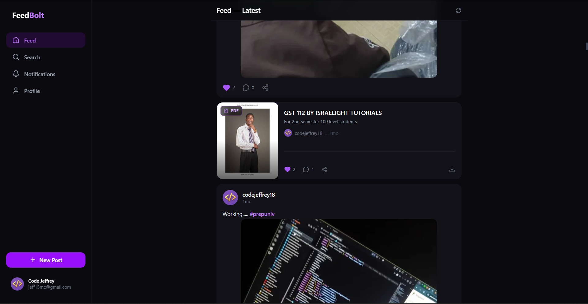

Own product
FeedBolt
A student social and study platform that grew into a university resource and archive.
Visit feedbolt-beige.vercel.app ↗

- The problem
- A feed is only useful while people are posting.
- The idea
- Started as a student social/study platform. Then the question became: what happens if the platform becomes useful even when students aren't actively posting?
- The build
- A student feed, study materials, and an Archive of PDF and DOCX resources, with bookmarks and user uploads, all oriented to university content.
- The thinking
- We chose to evolve the platform toward useful study resources and an Archive over relying on the social feed for engagement, because students should still have a reason to return when there is little new social activity.
- The result
- FeedBolt has reached hundreds of users as a student social and study platform, and it has kept evolving as I looked for ways to make it useful beyond the original feed.